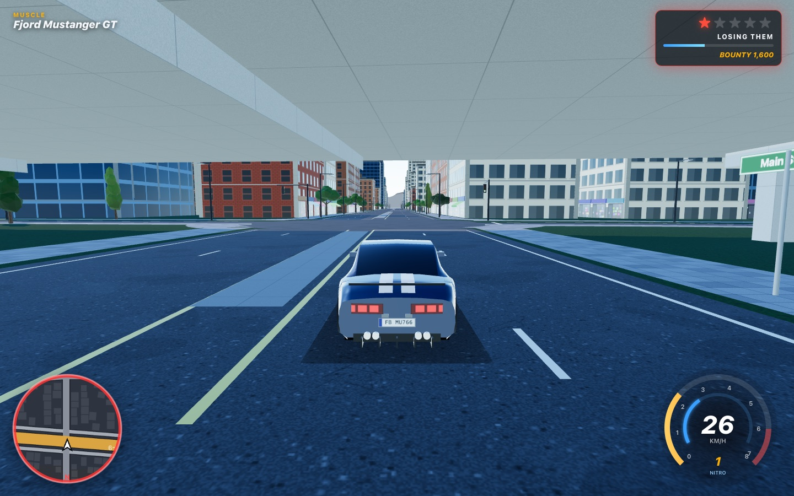
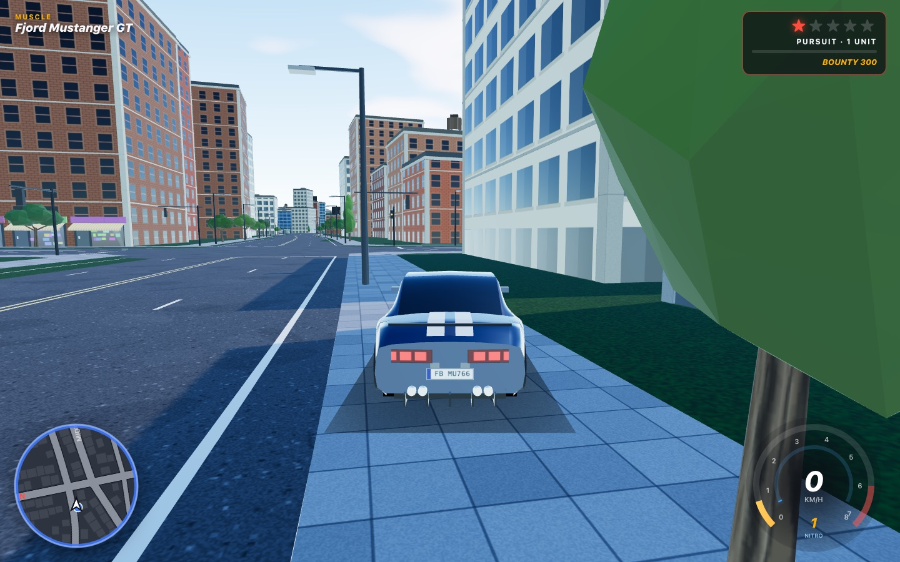
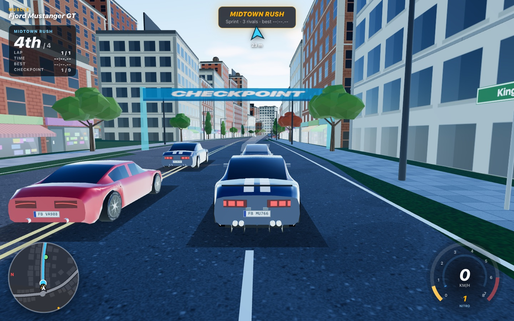
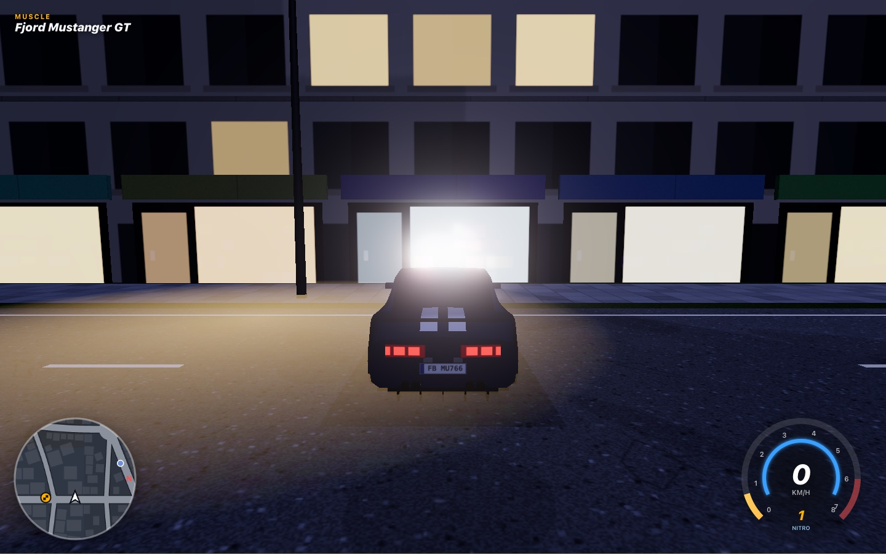

Product Designed: Fairbay Heat - Open-World Street Racing Game (browser, inspired by NFS Most Wanted 2013)
Platform Used: Designer v0.0.37 (Stages 1-4, 25-26 Nov) and v0.0.38 (Round 5 fixes, 26 Nov 2026)
AI Model Used: Claude Opus 5.5 (High effort on 25 Nov, then Max effort)
Product Details:
1. Stage 1 - Open-world driving (25 Nov): my own physics, input, camera, HUD, menus and Web Audio (Three.js only draws). 6 stylized cars with look-alike names, jack spots (E), garage, handbrake drift, nitro, jumps, crashes, day/night, minimap.
2. Stage 2 - City and traffic (25 Nov): hand-made asymmetric map (143 roads, 31.5 km: downtown, I-9 viaduct, harbour, hills, airfield, mountain pass), up to 48 traffic cars that follow lanes and lights, physically-modelled engine sound.
3. Stage 3 - Police chases (25 Nov): patrols in traffic that only see you in their view, heat levels 1-5, units that follow the roads, PIT, roadblocks, cooldown/escape, busted, sirens, pursuit HUD.
4. Stage 4 - Races and speed events (26 Nov): 4 races against AI rivals with checkpoints, laps and best times (traffic cut to about a third during races), 4 speed cameras and 2 speed traps with medals. Stage 1 dues completed: key remapping, controls card, rain with wet grip, near-miss nitro. More detailed sky, buildings and trees.
5. Round 5 - Fixes requested on 26 Nov: lower memory use, softer rub / bump / crash collisions, toned-down police, clean driving under bridges, better night visibility without headlights.
Deliverables:
1. Fairbay Heat playable in the browser (desktop / keyboard), live on Vercel; every push to main deploys automatically.
2. Public GitHub repository: TypeScript + Vite source, README with controls and features, roadmap (Stages 1-4 and Round 5 complete).
3. Automated tests: 145 unit tests and 129 browser checks with real key presses, passing locally and on the live site at 60 fps (Apple M1).
4. 32 test screenshots in docs/screenshots and this progress report.
Bug:
Driving under bridges (fixed 26 Nov)
Problem: From below, the viaduct deck was invisible (open sky between two floating beams); beside the street under it the car could jump up onto the highway or hit an invisible wall; the camera jerked in; columns could be driven through; cars on the deck could crash into cars below; rain fell through the deck.
Fix: Deck underside now drawn, ground lookup ignores the deck above, camera no longer pulls in, columns are solid, contact is level-aware, rain stops under decks. 6 new tests guard it.
Every collision was a full crash (fixed 26 Nov)
Problem: Light taps stopped or bounced the car back.
Fix: Three strengths now: rub under 18 km/h, bump 18-45 km/h (traffic car is pushed along and drives on), crash only above 45 km/h, shared by mass; wall scrapes slide without bouncing.
Police too strong (fixed 26 Nov)
Problem: Units kept up, rammed head-on at 200+ km/h and tailgated into the player.
Fix: Speed caps, safe tailing, short PITs that back off, no head-on rams, fewer units, roadblocks from heat 4 with a wider gap, longer bust, quicker escape. In tests a 150-180 km/h getaway now escapes at heats 1-3.
Night too dark without headlights (fixed 26 Nov)
Problem: The road was near-black away from the headlights (65-95% of the scene); the moon vanished after midnight; streets were almost black around 6 am.
Fix: Brighter moonlight and sky, horizon glow, wider lamp pools, glowing lane lines: about 3-4x brighter at night (measured at 5 spots), near-black area down to 12-28%, while headlight glare stays under 5%.
High memory use (fixed 26 Nov)
Problem: City build data stayed in memory for the whole game.
Fix: JavaScript heap 125 MB to 35 MB; page + graphics memory 920 MB to 759 MB (Retina 1320 MB to 888 MB); no growth over 5 rounds of play.
Earlier stages also fixed: cars pivoting about their centre (now turn about the rear axle), headlight glare washing out the screen (25-38% white to under 4%), a gear-shift hiss, overlapping traffic at one junction, rivals stuck at a sharp junction, and speed cameras counting one pass twice.
Not yet checked by a person: driving feel, race difficulty and the new sounds were measured by tests only. Not done: Stage 4 "more cars" (still 6 cars).
Link:
Live game: https://fairbay-heat.vercel.app
GitHub: https://github.com/DIVYAPRIYADHARSHINI-GIT/fairbay-heat
Screenshots:



